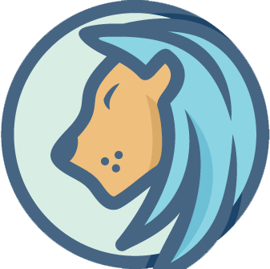

<ion-header>

  <ion-navbar color="primary">
    <ion-title>Dashboard</ion-title>
  </ion-navbar>

</ion-header>


<ion-content>
<ion-fab top right edge>
  <button ion-fab mini color="secondary"><ion-icon name="add"></ion-icon></button>
  <ion-fab-list>
    <button ion-fab (click)="openContact()"><ion-icon name="contact"></ion-icon></button>
    <button ion-fab (click)="openAbout()"><ion-icon name="apps"></ion-icon></button>
  </ion-fab-list>
</ion-fab>
</ion-content>

<!--<ion-content>
<ion-list>
<button ion-item no-lines padding margin round color="primary" (click)="openAbout()">
 
    <ion-thumbnail item-start>
      
    </ion-thumbnail>
    <h2>Ruby</h2>
  
</button>
</ion-list>

</ion-content>-->
<ion-content padding>
<ion-list no-lines>
    <button ion-item *ngFor="let item of items" (click)="openResults(item)">
      {{ item.name }}
    </button> 
  </ion-list>
</ion-content>


<ion-content padding>

</ion-content>